Penyelesaian Pengangkutan dan Logistik Bersepadu
Hafiy Transport Agency menyediakan perkhidmatan pengangkutan dan penyelarasan logistik dari Ulu Tiram, Johor, dengan pengalaman pengangkutan sejak 2015.
No. SSM: 201703215459 (JM0812653-U)
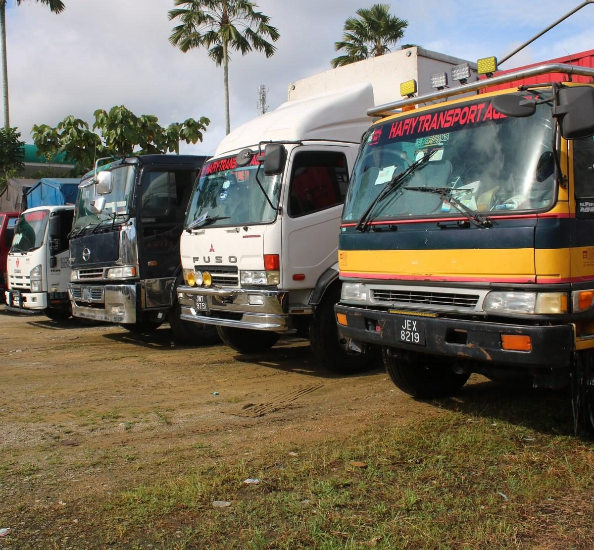
Mengenai Hafiy Transport Agency
Penyelesaian pengangkutan yang dibina atas pengalaman pengurusan sejak 2015
Identiti Perniagaan
Hafiy Transport Agency ialah perniagaan yang menyediakan perkhidmatan pengangkutan dan penyelarasan logistik dari Ulu Tiram, Johor. Perniagaan ini pada asalnya dikenali sebagai SAZ Express sebelum menggunakan nama Hafiy Transport Agency. Didaftarkan pada tahun 2017, dengan pengalaman pengurusan pengangkutan sejak 2015.
Tumpuan Pasaran
Fokus utama ialah pelanggan industri, pengilang, perdagangan dan korporat, disokong perkhidmatan pemindahan bagi pelanggan individu.
Model Operasi
Gabungan armada yang dimiliki perniagaan dengan rangkaian rakan subkontraktor bagi keperluan lori kren, low loader, side loader dan muatan khas.
Maklumat Rasmi
No. SSM: 201703215459 (JM0812653-U)
Tahun pendaftaran: 2017
Alamat utama: Taman Sri Saujana, Kota Tinggi, Johor.
Cawangan / alamat operasi: Lot 657, Batu 18, Jalan Sungai Tiram, Kampung Sungai Tiram, 81800 Ulu Tiram, Johor.
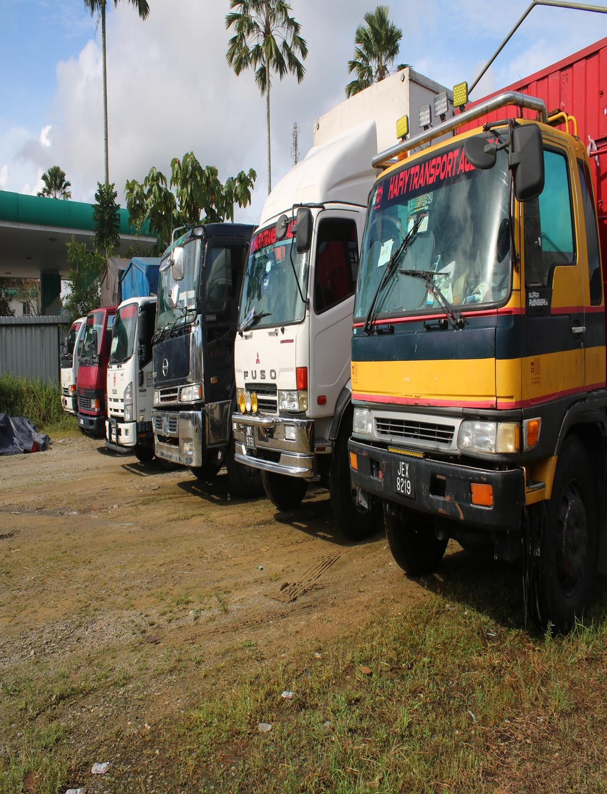
Perjalanan Membina Perniagaan
Daripada lori sewaan kepada penyelesaian pengangkutan bersepadu
Mula menjalankan kerja pengangkutan menggunakan lori sewaan, pada asalnya dengan nama SAZ Express.
Hafiy Transport Agency didaftarkan (SSM 201703215459). Lori pertama dibeli secara tunai.
Armada mencapai sembilan lori.
Bengkel di Sungai Tiram diwujudkan bagi menyokong penyelenggaraan armada.
Fokus kepada pelanggan industri, kecekapan penggunaan aset dan peluang pengedaran.
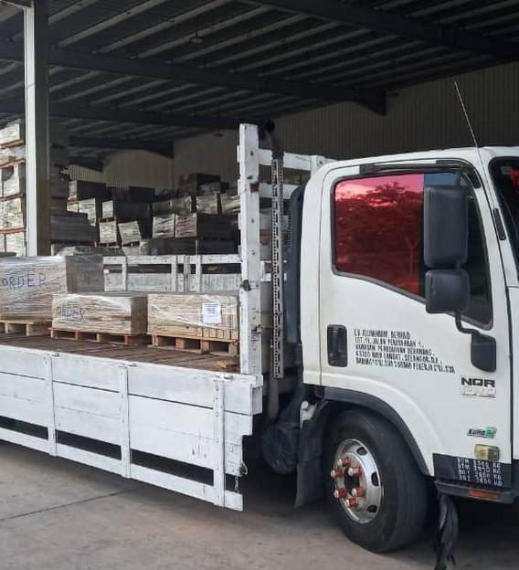
Visi, Misi & Prinsip Perkhidmatan
VISI
Menjadi penyedia perkhidmatan pengangkutan dan logistik bersepadu yang dipercayai, berdaya saing dan mampan, serta berkembang seiring dengan keperluan industri.
MISI
Misi 01
Memberikan pengangkutan yang cepat, tepat dan selamat.
Misi 02
Menggabungkan armada sendiri dengan rangkaian pengangkutan berpengalaman.
Misi 03
Meningkatkan kecekapan operasi, pengurusan armada dan kualiti servis.
Misi 04
Mengembangkan keupayaan pengangkutan, pergudangan dan pengedaran secara berperingkat.
CEPAT • TEPAT • SELAMAT
Tiga prinsip yang membentuk cara kami merancang, menyelaras dan melaksanakan setiap penghantaran.
CEPAT
Responsif dalam tindakan
Kami memberi maklum balas segera terhadap pertanyaan dan tempahan pelanggan. Jadual lori diselaras dengan cekap, disertai tindakan proaktif apabila berlaku perubahan atau cabaran operasi. Pendekatan ini memudahkan urusan dan mengurangkan masa menunggu.
TEPAT
Terancang dalam pelaksanaan
Setiap tugasan dirancang berdasarkan jenis barangan, kapasiti lori, alamat, jadual dan keperluan pelanggan. Penyelarasan perjalanan serta pemantauan GPS membantu pasukan berkongsi maklumat yang jelas dan memastikan penghantaran dilaksanakan mengikut arahan serta destinasi yang dipersetujui.
SELAMAT
Keselamatan sebagai keutamaan
Kami memberi perhatian kepada pemilihan kenderaan yang sesuai, susunan muatan, cara pengendalian dan penyelenggaraan armada. Keselamatan pemandu, kru, pengguna jalan raya serta barangan pelanggan diutamakan sepanjang proses pemuatan, perjalanan dan penyerahan.
Prinsip perkhidmatan: Kepercayaan pelanggan dibina melalui tindakan pantas, perancangan yang teliti dan pengendalian yang bertanggungjawab.
Penyelesaian Pengangkutan & Logistik
Pengangkutan Industri
Bahan mentah, stok perniagaan, peralatan dan produk siap antara kilang, gudang dan premis pelanggan.
Kontrak & Penghantaran Berjadual
Khidmat harian, mingguan, kontrak tetap dan tempahan atas permintaan.
Pengedaran Stok
Penghantaran berbilang destinasi, penyusunan laluan dan gabungan muatan.
Pemindahan Premis
Pindah rumah, pejabat, perniagaan dan peralatan bersama bantuan tenaga kerja.
Pengangkutan Khas
Pengurusan tempahan dan penyelarasan lori kren, low loader dan kenderaan khusus.
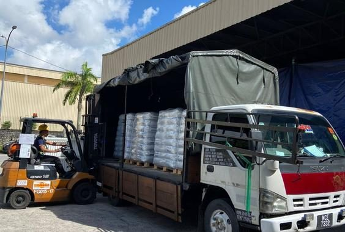
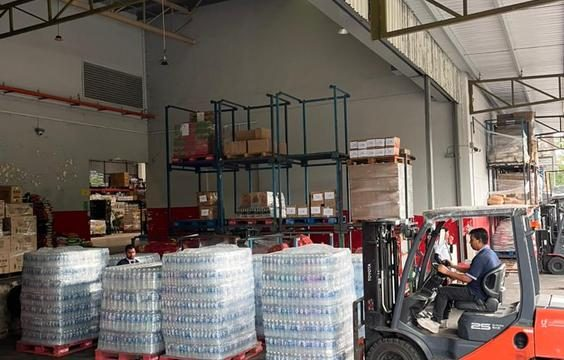
Keupayaan Melangkaui Armada Sendiri
Pengurusan projek khas melalui rangkaian subkontraktor
Lori Kren
Mengangkat dan menghantar peralatan, struktur logam dan bahan industri.
Low Loader
Pemindahan jentera, tangki dan peralatan besar yang memerlukan platform rendah.
Side Loader & Multi-Axle
Penyelarasan kontena serta muatan luar biasa, tertakluk kepada kesesuaian dan permit.
Satu Pihak Penyelaras
Hafiy Transport Agency mengurus sebut harga, komunikasi pelanggan, jadual, subkontraktor dan invois.
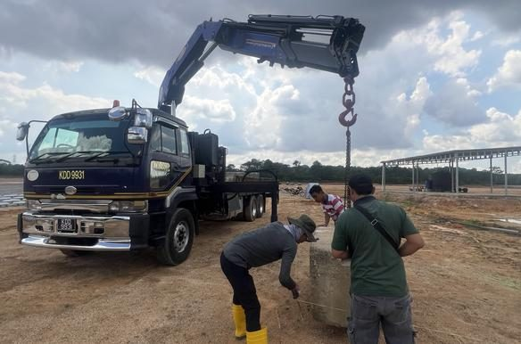
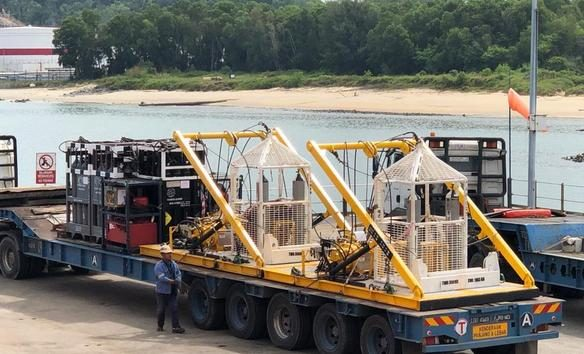
Armada & Kapasiti Operasi
Kenderaan pelbagai kategori bagi penghantaran komersial
Perniagaan mempunyai 9 kenderaan pengangkutan. Kategori yang disediakan termasuk lori 1 tan, lori kargo 3 tan, lori kargo 5 tan, lori box 5 tan, lori box 10 tan dengan tail-lift serta trailer.
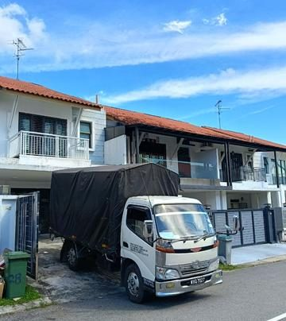
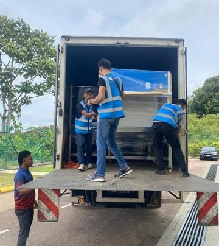
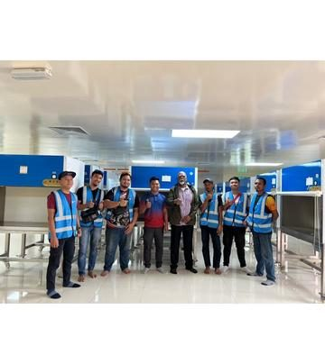
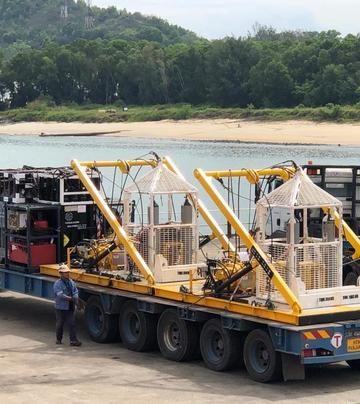
Johor • Semenanjung • Singapura
JOHOR
Fokus utama Johor Bahru, Ulu Tiram, Pasir Gudang, Senai, Iskandar Puteri dan kawasan industri sekitarnya.
SEMENANJUNG
Penghantaran jarak jauh dengan Johor Bahru sebagai lokasi asal atau destinasi akhir.
SINGAPURA
Pengalaman operasi rentas sempadan bagi pelanggan terpilih, termasuk kontrak berkaitan LB Aluminium.
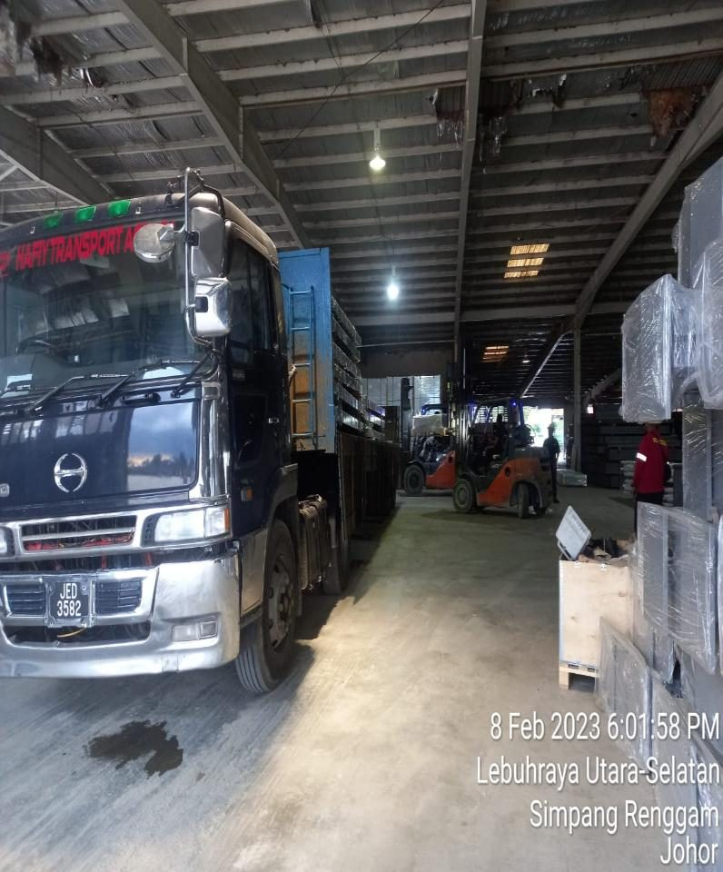
Pengurusan & Tenaga Kerja
Operasi disokong rakan pengangkutan serta mekanik sambilan mengikut keperluan. Angka kakitangan adalah berdasarkan maklumat pengurusan yang diberikan dan tertakluk kepada semakan terkini.
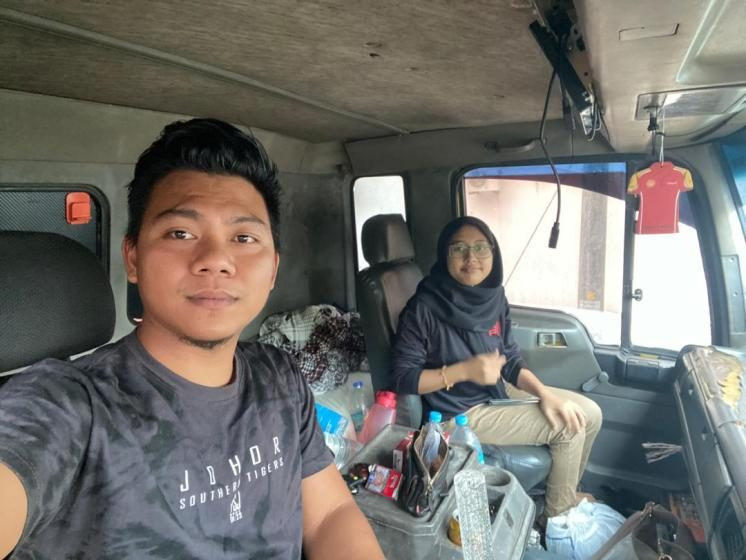
Pengurusan Armada & Bengkel Dalaman
Penyelarasan Jadual
Pemilihan kenderaan, pembahagian tugas pemandu serta penyusunan tempahan pelanggan.
Penjejakan GPS
Pemantauan lokasi kenderaan bagi membantu koordinasi dan maklumat perjalanan.
Dokumentasi
Pengurusan sebut harga, dokumen penghantaran, invois dan rekod tugasan.
Penyelenggaraan Dalaman
Bengkel di Sungai Tiram menyokong pembaikan kenderaan sendiri. Pengurusan teknikal dibantu mekanik sambilan apabila perlu.
HAFIY SMART TRADING – sokongan teknikal / bengkel berkaitan
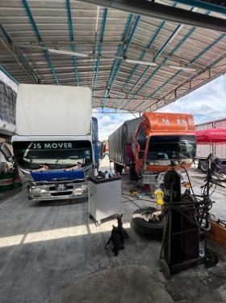
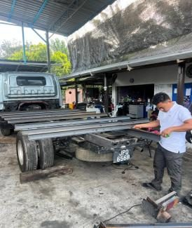
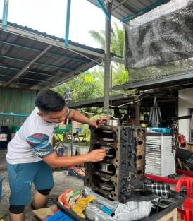
Rekod Kerja Industri & Institusi
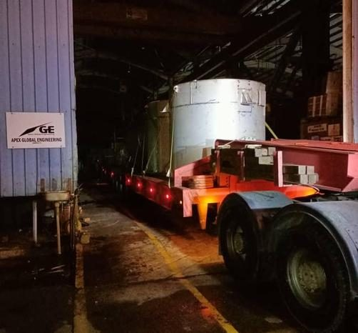
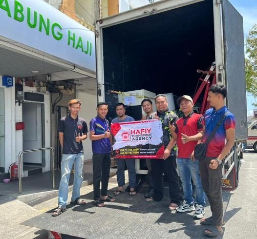
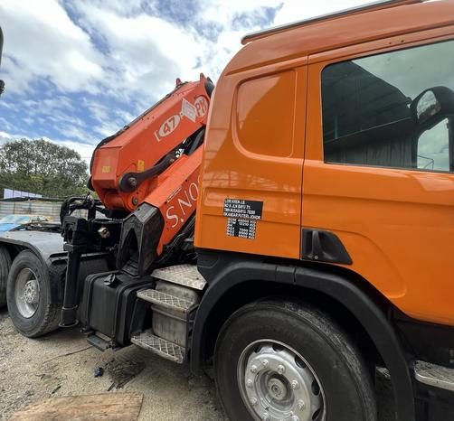
Asas Operasi Hab Logistik Johor
Pengalaman terdahulu mengurus penyimpanan sementara dan penghantaran berbilang destinasi
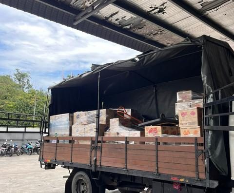
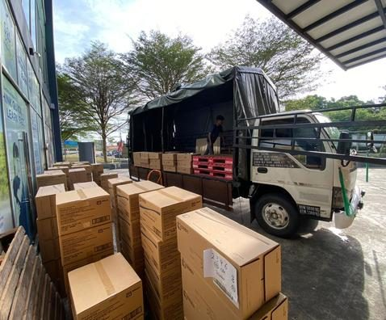
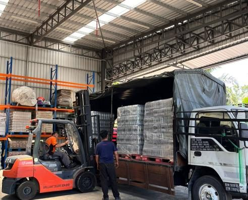
Gudang dalam gambar ialah lokasi operasi pelanggan; bukan kemudahan pergudangan milik Hafiy Transport Agency.
Antara Pelanggan Kami
Pengalaman menyediakan perkhidmatan kepada organisasi daripada pelbagai sektor industri dan perdagangan.
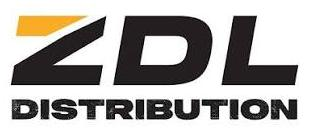
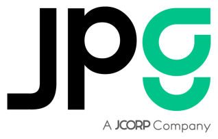
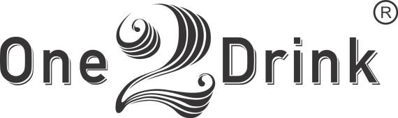
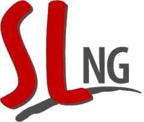
Antara pelanggan dan organisasi yang pernah dilayani melalui operasi dan pengalaman Hafiy Transport Agency.
Membina Hub Logistik Bersepadu di Johor
OPTIMUMKAN ARMADA
Memperkukuh produktiviti dan kontrak dengan aset yang tersedia.
KEMBANGKAN LORI KREN
Merancang pemerolehan lori kren bagi pengangkutan khusus.
HAB PERGUDANGAN & PENGEDARAN
Meneroka hab Johor bagi menerima stok vendor luar dan mengagihkannya ke destinasi pelanggan.
Komitmen & Aspirasi Masa Hadapan
Membina Kepercayaan, Memperkukuh Keupayaan, Mencipta Peluang
Berbekalkan pengalaman dalam industri pengangkutan sejak tahun 2015, Hafiy Transport Agency komited untuk terus memperkukuh kedudukannya sebagai penyedia perkhidmatan pengangkutan dan penyelarasan logistik yang dipercayai.
Gabungan pengalaman pengurusan, armada pengangkutan, tenaga kerja serta hubungan bersama pelanggan industri menjadi asas kepada pembangunan perniagaan yang lebih mampan.
Seiring dengan perkembangan sektor logistik, Hafiy Transport Agency berhasrat memperluas keupayaan melalui pengoptimuman armada sedia ada, pembangunan perkhidmatan pengangkutan khas serta penerokaan hab pergudangan dan pengedaran di Johor.
Kami percaya bahawa kerjasama strategik, peluang pembangunan vendor dan sokongan ekosistem industri mampu membuka ruang pertumbuhan yang lebih luas kepada perniagaan.
Hafiy Transport Agency bersedia melangkah ke fasa pertumbuhan seterusnya.
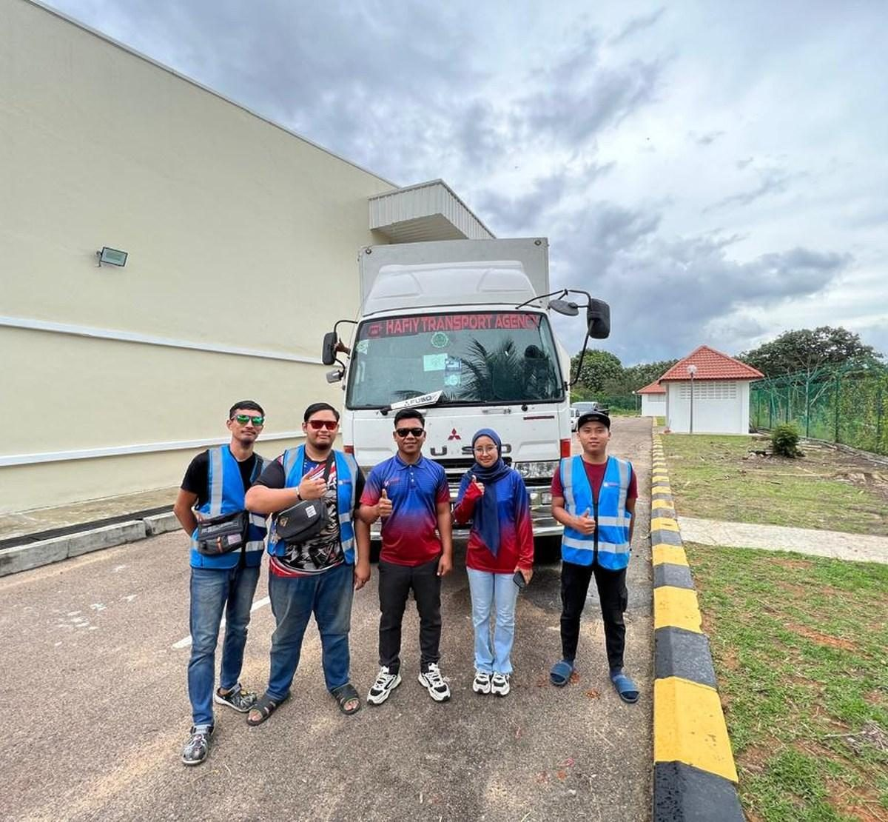
Galeri
Gambar terkini • November 2026. Klik gambar untuk memperbesarkan.


Hubungi Kami
Maklumat Perhubungan – HAFIY TRANSPORT AGENCY
- No. SSM:
201703215459 (JM0812653-U) - Alamat operasi:
Lot 657, Batu 18, Jalan Sungai Tiram, Kampung Sungai Tiram, 81800 Ulu Tiram, Johor. - Alamat utama:
Taman Sri Saujana, Kota Tinggi, Johor. - Telefon:
+6011-6545 4860 · +607-862 4733 - Email:
admin@hafiytransport.com
Maklumat Pengurusan
| Pemilik berdaftar | Noor Syazwani binti Pasani |
|---|---|
| COO | Alhafiy bin Alfian |
| Pengalaman | Pengangkutan sejak 2015 |
| Slogan | Cepat • Tepat • Selamat |
Pinpoint Lokasi Premis Operasi
Lokasi premis operasi ditunjukkan pada peta di bawah. Tekan “Buka di Google Maps” atau “Dapatkan arah” untuk navigasi ke lokasi.